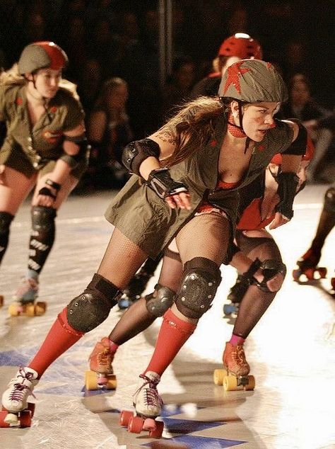
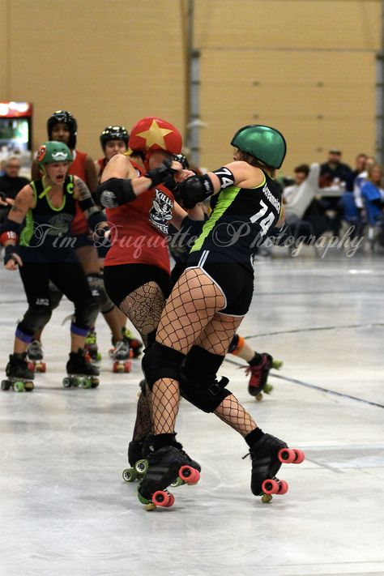
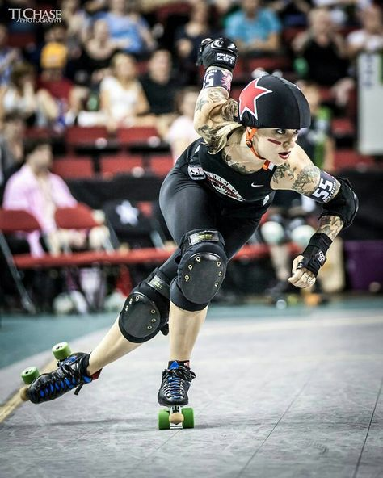

Overview
New to roller derby? Get a quick overview of the sport, its culture, and what makes it so unique!
History
Discover the exciting origins and evolution of roller derby! Explore its journey from endurance races to a high-contact sport!
Game Basics
Ready to dive into the rules? Learn the basics of roller derby, from scoring to player roles.
Contemporary Scene
See how roller derby thrives today: Explore the modern leagues, events, and communities shaping roller derby worldwide.